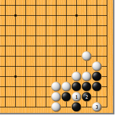
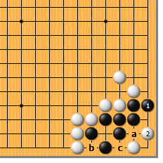
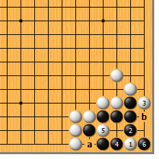
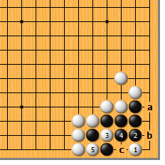
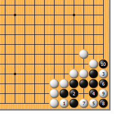
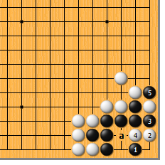
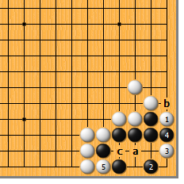

|  |  | |
| 图1 白1扑是正解。只此一手，就缩小了黑的眼位，黑2如提，白3点，正中要害。
| 图2 黑1立，是最顽强的抵抗手段。对此，白2尖好，黑a挤则白b打，黑成盘角曲四。黑于b位团眼也不行，白可c位打。 | |
|  |  | |
| 图3 白1直接点无法杀黑。黑2顶是急所，白3最多也就是扳，黑4再次顶住，白5扑，黑6提，黑活定。白a、黑b虽然是白的权利，不值一提。 | 图4 白1、黑2后，白3扑试应手。对此，黑4提是大失着！白5打，而后黑a则白b，黑死。黑4必须于c位顶。
| |
|  |  | |
图5 白1直接打，缺乏想象力。黑2粘，已不会净死，白3扳时，黑4曲是急所。白5托，黑6挡上最便宜，白7长，黑8扑，白9提时，黑10顺手提一个，双方展开劫争。
| 图6 前图的黑4如走本图1位跳补，是要想想清楚的。白2点，黑3遮断，白4冲。很明显，由于气紧，a位挡不上，黑5只好提。如果黑5不是先手，白a位长，足以致命；反之则黑活。 | |
|  | 您的高见 | |
图7 白1扳也不行。黑2当然跳补，白3点时，黑4遮断，接下来白5打，黑有两种选择：最起码a位做眼是劫活；如果b位提是先手，就能走c位粘净活。 |